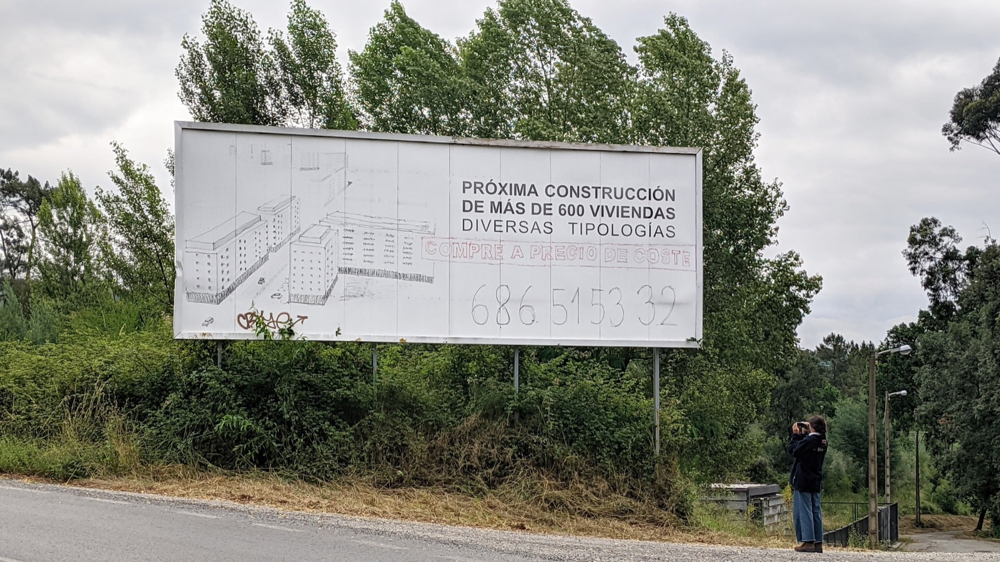
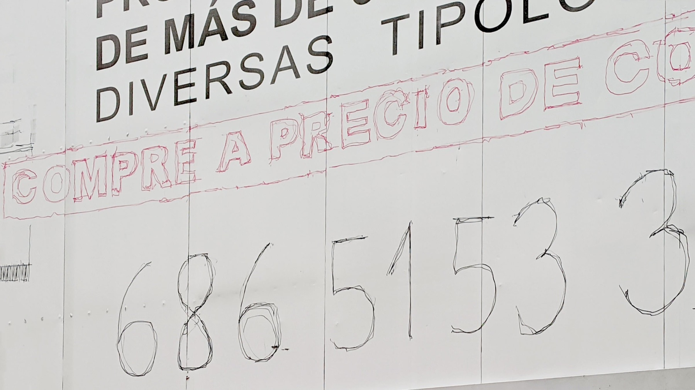
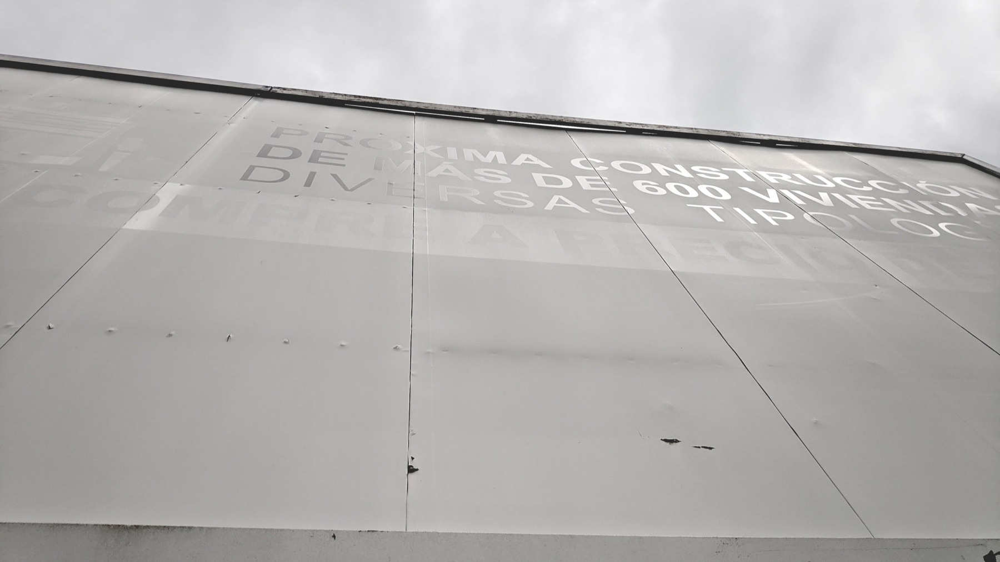
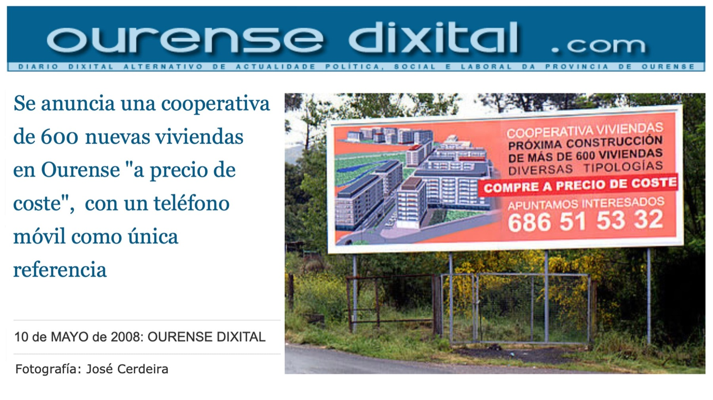

Obra2021
Llegar tarde a especular

Un domingo de junio estábamos caminando por el barrio de Oira, a las afueras de Ourense. Al salir de una pequeña zona boscosa nos topamos con un gran cartel blanco que anunciaba:
PRÓXIMA CONSTRUCCIÓN
DE MÁS DE 600 VIVIENDAS
DIVERSAS TIPOLOGÍAS
Por la composición del panel, se intuía sobre el blanco más información. Al acercarnos, justo debajo, podíamos completar el anuncio gracias a los rayos de sol que un día lo hicieron desaparecer.
¿Cuándo se había colocado la valla? ¿Cuántos días hacen falta para que el sol consiga borrar un mensaje?
Preguntamos a varios vecinos que disfrutaban de su paseo dominical. La respuesta fue unánime:
Hace mucho tiempo que eso está ahí, por lo menos desde antes del virus, y nadie lo quita.
Nadie lo quita, pero el sol se levanta cada mañana con la decisión de borrarlo. Al sol no le gustan los mensajes especuladores, pensé. Ni ningún otro. El sol no tiene horror vacui. Él solo busca el blanco puro.
Tras las pesquisas vecinales, buscamos el anuncio en internet. Allí encontramos un artículo de Ourense Dixital del 10 de mayo de 2008, cuatro meses antes de la caída de Lehman Brothers y del consiguiente pinchazo de la burbuja inmobiliaria, generada por los grandes especuladores en España.
Bajo el cartel, la maleza. Así que podemos suponer que llegaron tarde a especular.
Ahora, nosotros llegábamos trece años tarde a intervenir esa valla especulativa. En ese momento solo queremos restituir toda la información borrada: una ilustración del posible proyecto, un par de frases tentadoras y un número de teléfono. Nos pusimos a ello con lo que teníamos. Fue un intento de desafiar al sol con dos rotuladores que llevábamos encima y dos listones de madera que nos regalaron unos vecinos.
Una tarde de trabajo dedicada a reflotar la cutre y desdibujada especulación inmobiliaria. ¿Cuánto tardará el sol en borrar este mensaje?
- Dimensiones
- 300 x 800 cm
- Materiales
- Rotulador
- Valla publicitaria


